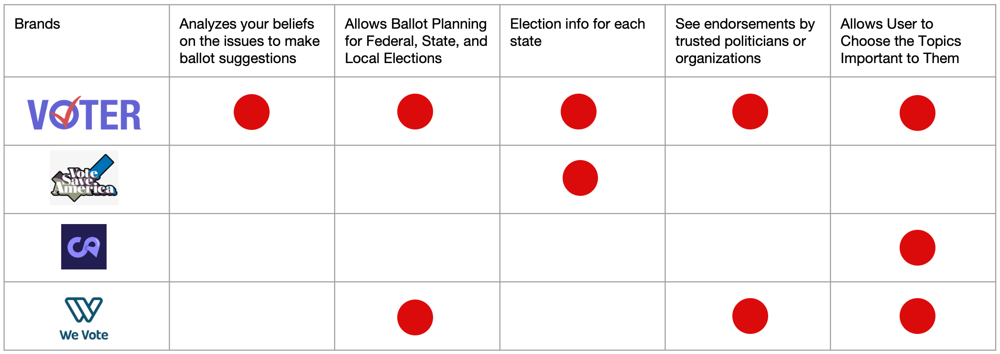
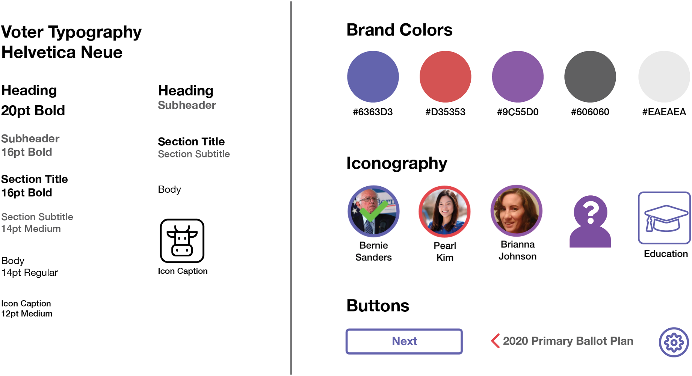
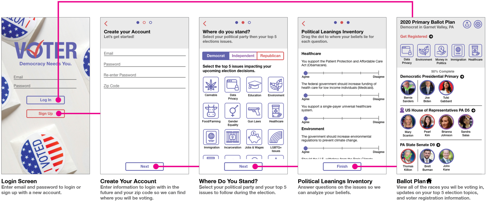
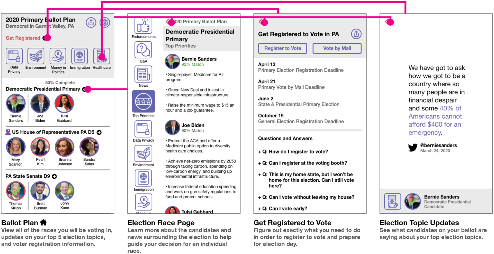
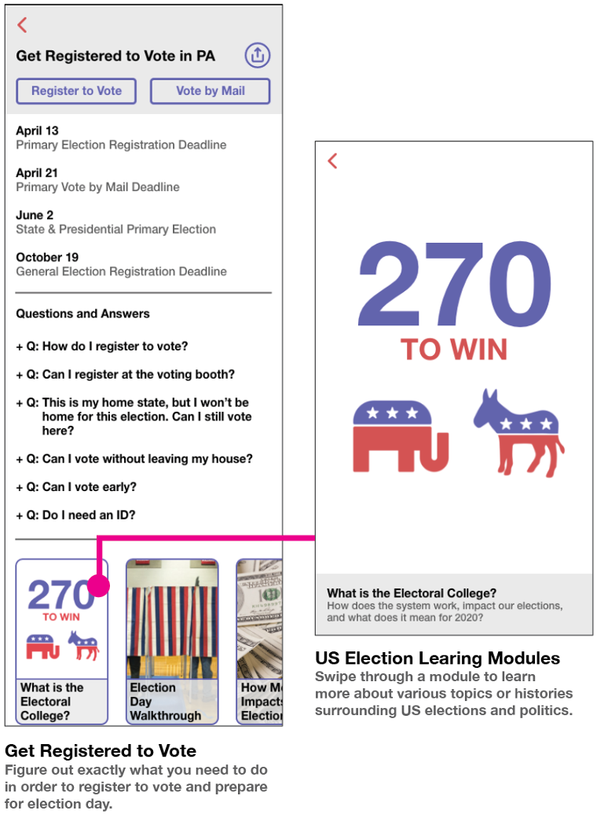

Mobile App Design - Service Identity
Voter
Voter allows you to plan out your ballot for upcoming local, state, and federal elections based on the things important to you.
Compare candidates by economic and social issue stances, news, Q&As, and endorsements. See how their platforms align with your own political leanings and get registered to vote for the next election. Getting involved in the political process can feel intimidating and time consuming. Voter provides the facts and information necessary to make informed decisions, without the noise.
Fake News as a Starting Point
I began this project by looking generally into issues surrounding the political landscape.
I became immediately interested in the concept of "fake news" and how it impacts our views towards and relationship with politics.
I found that...
Fake news is more readily available on Facebook than real news, at a time when Facebook's largest growing user group is adults 65+.
Older adults are four times more likely to share fake news than their younger counterparts.
The quick circulation of fake news makes it hard to figure out where the original source is or where misinformation stemmed from.
Older adults often lack technological literacy skills to discern reliable news websites from non-reliable alternatives.
Arriving at a Formal Problem
Reflecting on this research, I began to see how issues like fake news can affect one's ability to access credible information about politics.
Many people do not always have the time or energy to verify the important information surrounding the elected officials that run their communities, state, or nation.
Issues such as misinformation logically lead towards disengagement from the world of politics.
Around two-thirds of Americans have reported feeling worn out by media surrounding politics each year since 2016 according to Pew Research.
Thinking back to past elections, I remember finding value in social media posts from politically like-minded users that suggested how to vote across your ballot. This was especially helpful when choosing local or state candidates that may be lesser known due to the media's focus on national government.
Knowing the values and character of those running for each position on your ballot is a time-consuming, scavenger hunt of a task. How could there be a better way to explore candidates for yourself in a timely manner?
It was with this that I formulated my problem statement and narrowed in on my target demographic: Americans without the time or stamina to keep up with politics.
PROBLEM STATEMENT
How can Americans make more informed decisions when voting in elections while living busy lives outside of the world of politics?
Service Identity
Voter, the eventual solution to my problem statement, would focus on providing users with the necessary facts in a summarized format so that Americans can make more informed election decisions in an information rich, yet straightforward manner.
In planning my final solution, I needed to envision exactly how Voter could improve the election process and allow citizens to make more informed ballot decisions.
This helped me identify areas in the election process that would instill value in Voter to stand out against other voting-related applications in the space.
Service Model
Brand Audit
A User's Journey
With the "less-engaged voter" as my primary target user, I moved to craft a persona that would embody the primary frustrations and motivations of this user group.
Anne's Hero Journey
Branding Guide
Being a tool for communicating important election information, I wanted Voter's typography to have a formal, yet modern feel. Thus, I chose Helvetica Neue as the app's font. I also sought to incorporate the red and blue of the USA's leading political parties, but in a brighter tint to liven up this patriotic color combo.
Overall, this branding is meant to embody Voter's desire to make the election process more approachable for everyday Americans.
Branding Style Guide
In imagining a logo for the brand, I was naturally inspired by the imagery associated with poll stations and voting booths. The final logo features a check mark you might inscribe when filling out a handwritten ballot.
The logo is intended to communicate Voter's positioning as a ballot planning application.
Logo Design
Final Logo
Previous Iteration
Previous Iteration
Previous Iteration
Story Boarding and UI
With the brand in place, I turned towards visualizing the UI and primary functionality within the application.
UI exploration was driven by the story telling surrounding my persona's (Anne's) user journey.
Thus, I drew out a visual story board with accompanying screen sketches to discern how the UI would aid users throughout the election cycle.
Finally, I transferred these UI sketches to high fidelity mockups incorporating the branding.
I discerned a more complete list of necessary screens by laying out the UI specs in workflow diagrams (seen below).
Login/Sign Up Sequence
Overall Application Heirarchy
Candidate Comparison Subject Options

Registration/Education Module Sequence
These high-fidelity specs were then paired with original photography to bring the user journey to life.
INTRODUCING...
Democracy Needs You
Voter Understands Your Politics
The registration process allows Voter to learn your poll location, political leanings, and top election issues.
Voter uses your zip code to populate your ballot with local, state, and federal races you will be voting in.
Ranking your top 5 voting issues helps Voter keep you updated on the conversations surrounding your priorities.
The political leanings inventory calculates which candidates are most suitable to your beliefs, without hiding the candidates that might disagree with you. You find your political beliefs aligning with a candidate you haven't considered.
Plan Out Your Ballot Before Election Day
Voter identifies and scores the local, state, and federal candidates that are eligible for your vote, based on your party and zip code.
Regardless of if it's the primary or main election is approaching, plan out each line of your ballot. Make your vote count and be ready for the voting booth... or mail-in ballot!
Learn about each race at a high-level with match scores for each candidate that identify how closely the candidate is aligned with your core beliefs.
Delve deeper with summarized information about each candidate's top priorities, endorsements, issue stances, and news.
Get Registered and Stay Updated
Voter guides users through registration and vote by mail processes, while continuing to update users with information specific to their top five election issues.
Access daily updated stories surrounding your top 5 voting issues that highlight aggregated content from various local, state, and federal candidates on your ballot.
Personalized registration deadlines and links to voter registration site are all in one place. Registration is the first step towards making your voice heard!
FAQs and election process education modules clear up any confusion users might have as they prepare to vote.